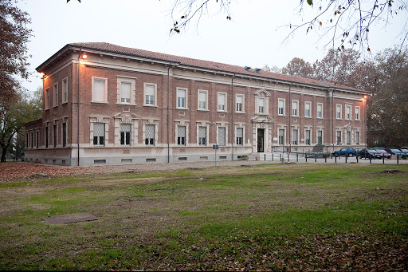

Padiglione Tanzi
Il seminterrato del padiglione Tanzi durante la seconda guerra mondiale era utilizzato come rifugio in caso di bombardamento. Oltre ai divieti (di fumare e di parlare) i graffiti riportano le date dei bombardamenti. In quello dell'8 gennaio morirono alcune decine di ricoverati, molti dei quali si trovavano nella sala comune del padiglione per "semi-tranquilli", centrato dalle bombe. A guerra finita, il direttore del San Lazzaro Aldo Bertolani raccontò le vicende del periodo bellico con un articolo sulla "Rivista sperimentale di freniatria", in cui ricorda anche come, il 25 aprile, i carri armati alleati passarono proprio dal parco del San Lazzaro per raggiungere il centro città.